物理學筆記整理
範圍：庫倫定律、電場電位、高斯定律、電容、磁場磁力與帶電粒子運動、電阻率與歐姆定律
一、庫倫定律 (Coulomb's Law)
相關物理常數：
- $k = 8.988 \times 10^9\ \frac{\text{N}\cdot\text{m}^2}{\text{C}^2}$
- $\varepsilon_0 = 8.854 \times 10^{-12}\ \frac{\text{C}^2}{\text{N}\cdot\text{m}^2}$
- $e = 1.602 \times 10^{-19}\text{ C}$
- $y$ 軸上有兩個正電荷 $+2\ \mu\text{C}$，分別位於 $y = 0.3\text{ m}$ 與 $y = -0.3\text{ m}$。
- $x$ 軸上有一正電荷 $Q = +4\ \mu\text{C}$ 位於 $x = 0.4\text{ m}$。
- 受力方向為 $\vec{F}_1$（朝右上方，與 $x$ 軸夾角 $\theta$）及 $\vec{F}_2$（朝右下方）。
查看黑板原始筆記照片 (一、庫倫定律)
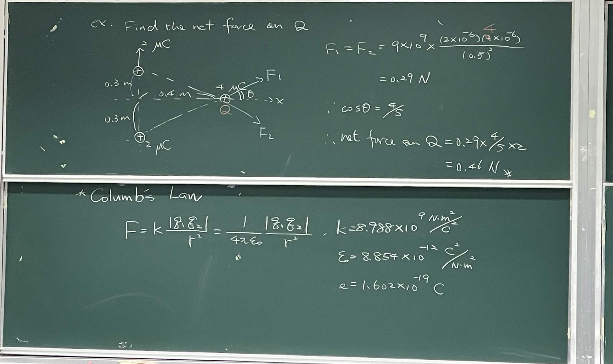
計算過程：
$$F_1 = F_2 = 9 \times 10^9 \times \frac{(2 \times 10^{-6})(4 \times 10^{-6})}{(0.5)^2}$$ $$= 0.29\text{ N}$$ $$\text{由幾何關係得：}\cos\theta = \frac{4}{5}$$ $$\text{淨力：net force on } Q = 0.29 \times \frac{4}{5} \times 2$$ $$= 0.46\text{ N} \quad \#$$二、電場與點電荷電場 (Electric Field and Point Charges)
電場定義：
重力場類比：
- Familiar expression: $\vec{F} = m\vec{g}$ , $g$ is the gravitational field.
點電荷產生的力與電場：
電場方向規律：
- Electric field of a point charge points $\left\{\begin{array}{c} \text{away} \\ \text{toward} \end{array}\right\}$ from a $\left\{\begin{array}{c} \text{positive} \\ \text{negative} \end{array}\right\}$ charge $\left\{\begin{array}{c} \sim\text{same} \\ \sim\text{opposite} \end{array}\right\}$ direction as $\hat{r}$
查看黑板原始筆記照片 (二、點電荷電場)
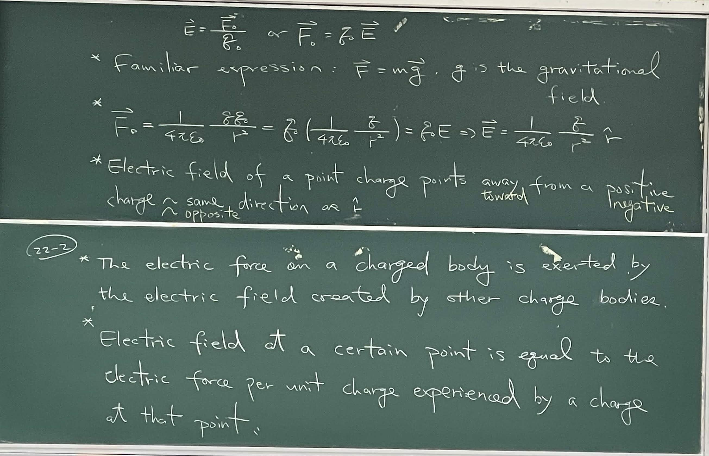
- The electric force on a charged body is exerted by the electric field created by other charge bodies.
- Electric field at a certain point is equal to the electric force per unit charge experienced by a charge at that point.
三、電場與電荷運動計算 (Electric Field and Charged Particle Motion)
- 平行板電容器接上電池，產生朝上的均勻電場：$E = 1.00 \times 10^4\text{ N/C}$。
- 板間距為 $10^{-2}\text{ m}$，一電子（電荷為 $-e$）置於其中，受電場力作用向下運動。
查看黑板原始筆記照片 (三、電荷運動計算)
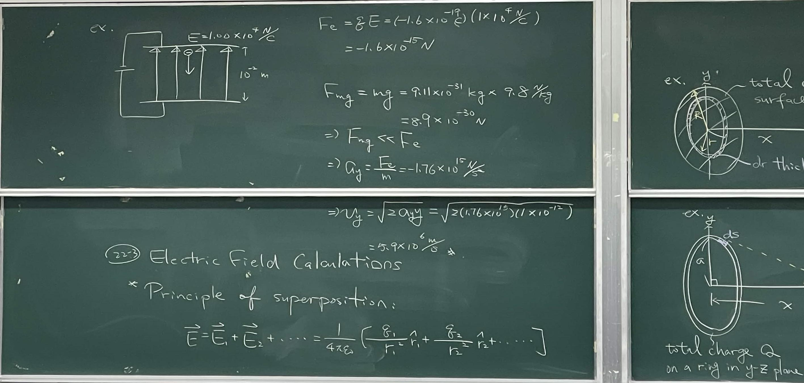
計算過程：
$$F_e = q E = (-1.6 \times 10^{-19}\text{ C})(1 \times 10^4\text{ N/C})$$ $$= -1.6 \times 10^{-15}\text{ N}$$ $$F_{mg} = mg = 9.11 \times 10^{-31}\text{ kg} \times 9.8\ \frac{\text{N}}{\text{kg}}$$ $$= 8.9 \times 10^{-30}\text{ N}$$ $$\Rightarrow F_{mg} \ll F_e \quad \text{（重力可忽略）}$$ $$\Rightarrow a_y = \frac{F_e}{m} = -1.76 \times 10^{15}\ \frac{\text{N}}{\text{kg}}$$ $$\Rightarrow v_y = \sqrt{2 a_y y} = \sqrt{2 (1.76 \times 10^{15})(1 \times 10^{-2})}$$ $$= 5.9 \times 10^6\ \frac{\text{m}}{\text{s}} \quad \#$$四、電場計算與疊加原理 (Electric Field Calculations and Superposition)
疊加原理 (Principle of superposition)：
- 圓環半徑為 $a$，總電荷量為 $Q$，位於 $y-z$ 平面上。
- 環上微元長度為 $ds$，與軸線上 $P$ 點的距離為 $\sqrt{x^2+a^2}$，連線與軸線夾角為 $\alpha$。
- $P$ 點距離圓環中心為 $x$。
查看黑板原始筆記照片 (四、圓環電場)
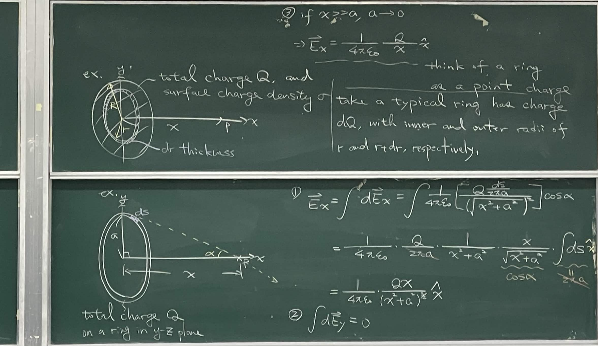
計算與積分過程：
$$\text{① } \vec{E}_x = \int d\vec{E}_x = \int \frac{1}{4\pi\varepsilon_0} \left[ \frac{Q \frac{ds}{2\pi a}}{\left(\sqrt{x^2 + a^2}\right)^2} \right] \cos\alpha$$ $$= \frac{1}{4\pi\varepsilon_0} \cdot \frac{Q}{2\pi a} \cdot \frac{1}{x^2 + a^2} \cdot \frac{x}{\sqrt{x^2 + a^2}} \cdot \int ds \hat{x}$$ $$\text{其中 } \cos\alpha = \frac{x}{\sqrt{x^2 + a^2}} \text{，且 } \int ds = 2\pi a$$ $$= \frac{1}{4\pi\varepsilon_0} \frac{Q x}{\left(x^2 + a^2\right)^{3/2}} \hat{x}$$ $$\text{② } \int d\vec{E}_y = 0$$極限情況分析：
$$\text{③ if } x \gg a, \ a \rightarrow 0$$ $$\Rightarrow \vec{E}_x = \frac{1}{4\pi\varepsilon_0} \frac{Q}{x^2} \hat{x} \quad \text{(think of a ring as a point charge)}$$五、均勻帶電圓盤在軸線上的電場 (Electric Field of a Charged Disk)
- 圓盤總電荷為 $Q$，面電荷密度為 $\sigma$，半徑為 $R$。
- 在圓盤內部選取一個半徑為 $r$、寬度為 $dr$ 的典型微元環 (take a typical ring has charge dQ, with inner and outer radii of r and r+dr, respectively.)。
查看黑板原始筆記照片 (五、圓盤電場)
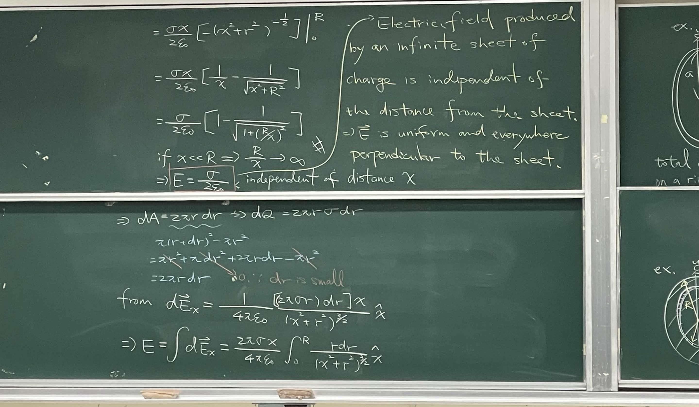
微元面積 $dA$ 與電荷 $dQ$ 推導：
$$\Rightarrow dA = 2\pi r dr \Rightarrow dQ = 2\pi r \sigma dr$$幾何面積推導過程：
$$\pi (r + dr)^2 - \pi r^2 = \pi r^2 + \pi dr^2 + 2\pi r dr - \pi r^2$$ $$\text{由於 } dr \text{ 極小，其平方項可忽略：} \pi dr^2 \approx 0 \quad (\because dr \text{ is small})$$ $$\Rightarrow dA = 2\pi r dr$$電場微元與積分求解：
$$\text{由圓環電場公式可得：} d\vec{E}_x = \frac{1}{4\pi\varepsilon_0} \frac{\left[(2\pi r \sigma) dr\right] x}{\left(x^2 + r^2\right)^{3/2}} \hat{x}$$ $$\Rightarrow E = \int d\vec{E}_x = \frac{2\pi \sigma x}{4\pi\varepsilon_0} \int_0^R \frac{r dr}{\left(x^2 + r^2\right)^{3/2}} \hat{x}$$ $$= \frac{\sigma x}{2\varepsilon_0} \left[ -\left(x^2 + r^2\right)^{-1/2} \right] \Big|_0^R$$ $$= \frac{\sigma x}{2\varepsilon_0} \left[ \frac{1}{x} - \frac{1}{\sqrt{x^2 + R^2}} \right]$$ $$= \frac{\sigma}{2\varepsilon_0} \left[ 1 - \frac{1}{\sqrt{1 + (R/x)^2}} \right] \quad \#$$極限情況（無限大帶電平板）：
$$\text{if } x \ll R \Rightarrow \frac{R}{x} \rightarrow \infty$$- Electric field produced by an infinite sheet of charge is independent of the distance from the sheet.
- $\Rightarrow \vec{E}$ is uniform and everywhere perpendicular to the sheet.
六、電偶極 (Electric Dipoles)
22-9 Electric Dipoles (電偶極)
- An electric dipole is a pair of point charges with equal magnitude and opposite sign separated by a distance d.
範例：兩相反帶電無限大平板的電場 (ex. Field of two oppositely charged infinite sheets.)
$\vec{E} = \vec{E}_1 + \vec{E}_2$
① inside the sheets
② above the upper sheet and below the lower sheet
查看黑板原始筆記照片 (六、電偶極與相反帶電平板)
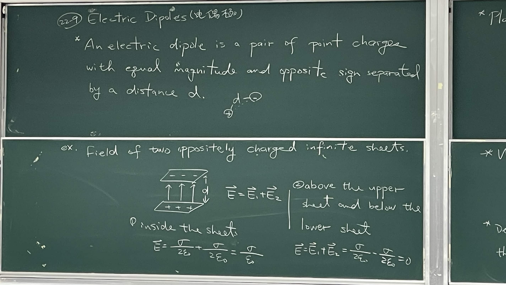
Placing an electric dipole in an electric field.
torque exerted by the field:
對應的位能變化 (The corresponding change in potential energy)：
- 均勻電場 $E = 5 \times 10^5\text{ N/C}$。
- 電偶極電荷為 $q = \pm 1.6 \times 10^{-19}\text{ C}$，相距 $d = 0.125\text{ nm}$。
- 電偶極矩與電場方向夾角 $\phi = 145^\circ$。
計算與整理：
① 電偶極受到的淨力為 0，但力矩不為 0 (net force on the dipole = 0, but torque $\neq$ 0)：
② 電偶極矩大小 $p$：
③ 力矩 (torque)：
④ 位能 (U)：
查看黑板原始筆記照片 (六、電偶極受力與位能計算範例)
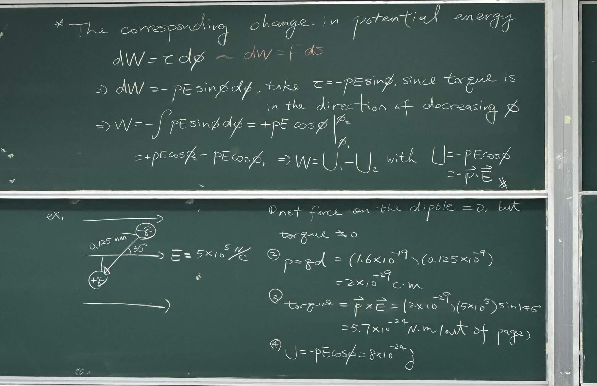
Water molecule is an example of an electric dipole.
Define electric dipole moment $p=qd$, and direction along the dipole axis from $\ominus$ to the $\oplus$.
查看黑板原始筆記照片 (六、電偶極矩與水分子觀念)
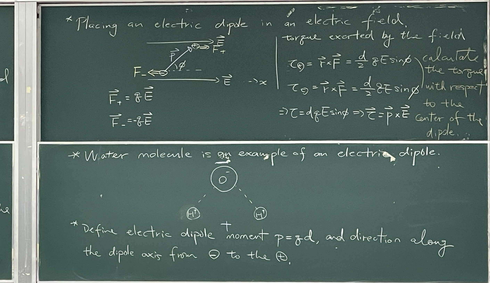
七、高斯定律 (Gauss's Law)
23-1 電量與電通量 (Charge and Electric Flux)
高斯定律的定性敘述 (Qualitative statement of Gauss's Law)：
-
① Net outward or inward electric flux through a closed surface depends on the
sign of the enclosed charge.
（中文說明：穿過封閉曲面的淨流出或流入電通量，取決於內部包圍電荷的正負號。） -
② Charge outside the surface do not give a net electric flux.
（中文說明：曲面外部的電荷不會產生淨電通量。） -
③ Net electric flux is directly proportional to the net amount of charge
enclosed within the surface, but is otherwise independent of the size of the enclosed surface.
（中文說明：淨電通量與曲面內包圍的淨電荷量成正比，但與封閉曲面的大小無關。）
查看黑板原始筆記照片 (七、高斯定律定性關係)
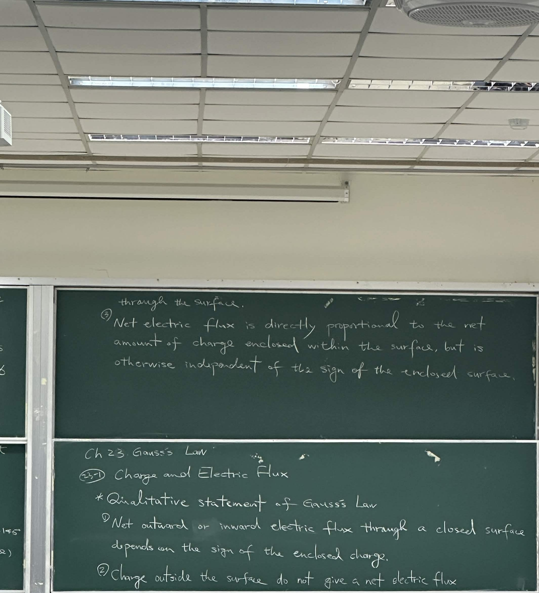
23-1 電通量計算 (Calculating Electric Flux)
流體類比與面積向量：
以流體流量類比電通量，設流速為 $\vec{v}$，面積為 $\vec{A}$：
- 當面積與流速垂直時，體積流率（volume flow rate）為：
$$\frac{dv}{dt} = v A \quad \text{（單位：立方米每秒，板上記作 cubic per meter）}$$
- 若矩形面積與流速方向傾斜 $\phi$ 角度時，其體積流率為：
$$\frac{dv}{dt} = v A \cos\phi$$
- 當傾斜角 $\phi = 90^\circ$ 時，體積流率為零，可推廣寫成向量內積形式：
$$\frac{dv}{dt} = 0 \Rightarrow \frac{dv}{dt} = \vec{v} \cdot \vec{A}$$
查看黑板原始筆記照片 (七、平面電通量與傾角)
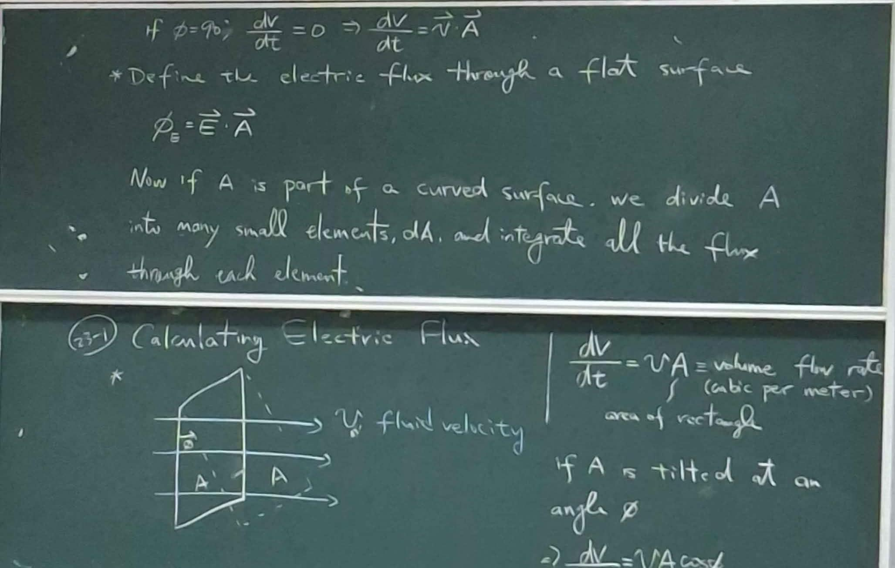
平面電通量定義：
曲面電通量與面積分：
若面積 $A$ 為曲面的一部分，我們將 $A$ 分割為許多微小面積元 $dA$，並對穿過每個微小面積元的電通量進行積分（面積分）：
此即所謂的「面積分 (surface integral)」。
一個正點電荷 $q = 3.0\ \mu\text{C}$ 被一個半徑為 $0.2\text{ m}$ 的球面所包圍，求球面上的電場與總電通量。
查看黑板原始筆記照片 (七、球面電通量範例)
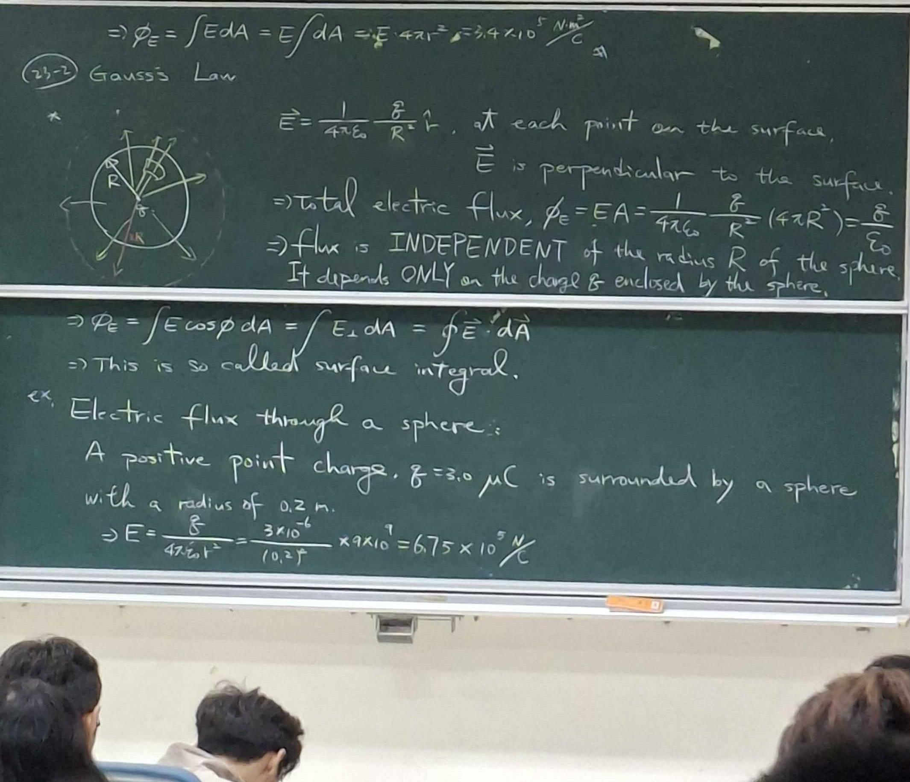
計算過程：
① 計算球面上的電場強度 $E$：
② 計算穿過該球面的總電通量 $\Phi_E$：
23-2 高斯定律 (Gauss's Law)
點電荷圍繞於球面中心之分析：
設一正點電荷 $q$ 位於半徑為 $R$ 的球體中心：
- 在球面上的每個點，其電場強度為：
$$\vec{E} = \frac{1}{4\pi\varepsilon_0} \frac{q}{R^2} \hat{r}$$
- 在球面上的每個點，電場 $\vec{E}$ 均與球面垂直。
- 穿過球面的總電通量 $\Phi_E$ 為：
$$\Phi_E = E A = \frac{1}{4\pi\varepsilon_0} \frac{q}{R^2} (4\pi R^2) = \frac{q}{\varepsilon_0}$$
- 由上式可知，穿過封閉球面的電通量與球面的半徑 $R$ 無關（independent of the radius $R$ of the sphere），僅取決於該球面所包圍的電荷 $q$（depends ONLY on the charge $q$ enclosed by the sphere）。
不規則表面與未包圍電荷之曲面：
- 對於任意不規則形狀的封閉表面，電通量公式 $\Phi_E = \frac{q}{\varepsilon_0}$ 依然成立（For an irregular surface, the $\Phi_E = \frac{q}{\varepsilon_0}$ also holds）。
- 對於未包圍任何電荷的封閉表面（For a closed surface enclosing no charge）：
$$\Phi_E = \oint \vec{E} \cdot d\vec{A} = 0$$
此時，任何由外部電荷產生的電場線，若從一側進入該區域，必定會從另一側穿出（any field lines caused by charges outside the region that enter on one side must leave again on the other side）。
高斯定律的一般陳述 (General statement of Gauss's Law)：
此公式與包圍曲面的形狀無關，即獨立於球面的形狀（independent of the shape of the sphere）。
在同一個封閉系統中，分析不同包圍面所通過的電通量：
- 包圍正電荷 $+q$ 的曲面 $A$：
$$\Phi_A = \frac{q}{\varepsilon_0}$$
- 包圍負電荷 $-q$ 的曲面 $B$：
$$\Phi_B = \frac{-q}{\varepsilon_0}$$
- 同時包圍電偶極（包含 $+q$ 與 $-q$）的曲面 $C$，以及未包圍電荷的曲面 $D$：
$$\Phi_C = \Phi_D = 0$$
查看黑板原始筆記照片 (七-二、不規則表面高斯面與電偶極電通量分析)
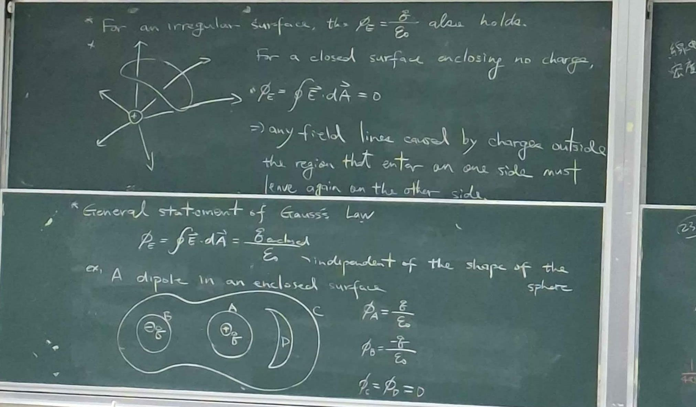
23-3 高斯定律之應用 (Application of Gauss's Law)
設線電荷密度為 $\lambda$：
選取一個半徑為 $r$、長度為 $l$ 的圓柱形高斯面（take a Gaussian surface），穿過圓柱側面的電通量為：
設一球體半徑為 $R$，總電荷量 $Q$ 均勻分布於球體體積內：
- 球體外部 ($r > R$)：
$$E = \frac{1}{4\pi\varepsilon_0} \frac{Q}{r^2}$$
- 球體內部 ($r < R$)：
選取半徑為 $r$ 的球面作為高斯面，其包圍的電荷為體積比值乘以總電荷：
$$\Phi_E = E \cdot 4\pi r^2 = \frac{\frac{4}{3}\pi r^3}{\frac{4}{3}\pi R^3} \frac{Q}{\varepsilon_0}$$ $$\Rightarrow E = \frac{1}{4\pi\varepsilon_0} \frac{Q}{R^3} r \quad \#$$
靜電平衡下的導體電荷分布與電場：
在靜電平衡條件（無淨電荷移動，under electrostatic conditions）下，任何多餘的電荷均完全分布在固體導體的表面上（any excess charge resides entirely on the surface of a solid conductor）。
對一個半徑為 $R$、帶電量為 $q$ 的固體導體球：
- 在導體內部 ($r < R$)，電場為零（$E=0$）。
- 在導體外部 ($r > R$)，以半徑為 $r$ 的球面作為高斯面：
$$\oint \vec{E} \cdot d\vec{A} = \frac{q}{\varepsilon_0} \Rightarrow E \cdot 4\pi r^2 = \frac{q}{\varepsilon_0} \Rightarrow E = \frac{1}{4\pi\varepsilon_0} \frac{q}{r^2}$$
查看黑板原始筆記照片 (七、高斯應用典型幾何)
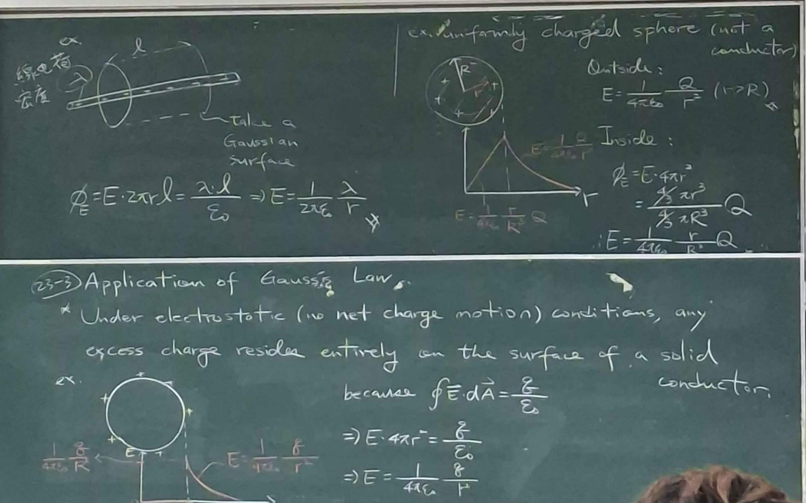
八、電位能 (Electric Potential Energy)
單點電荷產生的電場對測試電荷所做的功：
在由單一靜止點電荷 $q$ 所產生的電場中，將一個測試電荷 $q_0$ 從 $r_a$ 移動到 $r_b$ 時，電場力對其所做的功（Work done on a test charge $q_0$ moving in the electric field caused by a single stationary point charge $q$）：
查看黑板原始筆記照片 (八、電場力作功與位能定義)
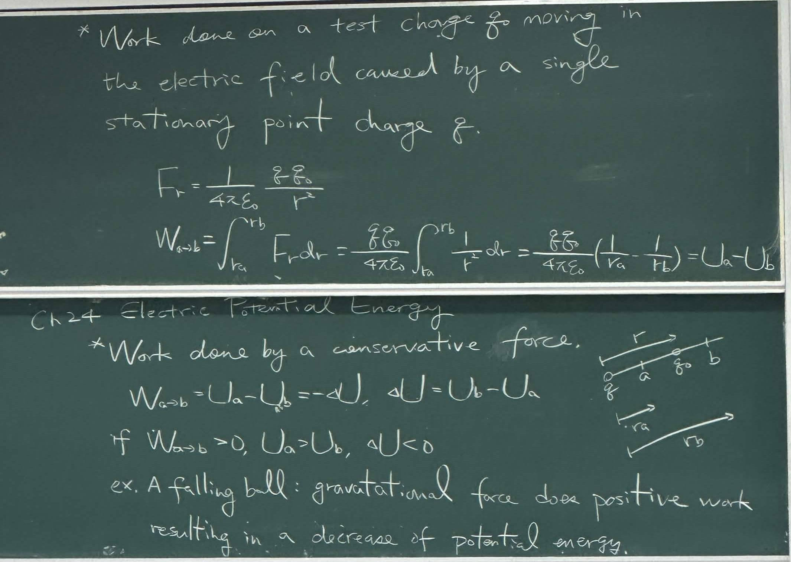
保守力作功與位能變化的關係：
保守力做功等於位能變化的負值（Work done by a conservative force）：
- 若 $W_{a\rightarrow b} > 0$，表示保守力做正功，系統位能減少（$U_a > U_b$，$\Delta U < 0$）。
- 重力場類比： 自由落體的球（a falling ball），重力做正功，導致重力位能減少（gravitational force does positive work resulting in a decrease of potential energy）。
點電荷系統的電位能 (Electric Potential Energy)：
設系統中包含：
- 正電子（positron）：電荷 $+e = 1.6 \times 10^{-19}\text{ C}$，質量 $M_{\text{positron}} = 9.11 \times 10^{-31}\text{ kg}$。
- $\alpha$ 粒子（$\alpha$-particle）：電荷 $2e = 3.2 \times 10^{-19}\text{ C}$，質量 $M_{\alpha} = 7000 \times M_{\text{positron}}$。
已知 $\alpha$ 粒子固定靜止，正電子在與其距離 $r_a = 1 \times 10^{-10}\text{ m}$ 處，以初速度 $v_a = 3.0 \times 10^6\text{ m/s}$ 向外運動。
查看黑板原始筆記照片 (八、正電子排斥能量守恆)
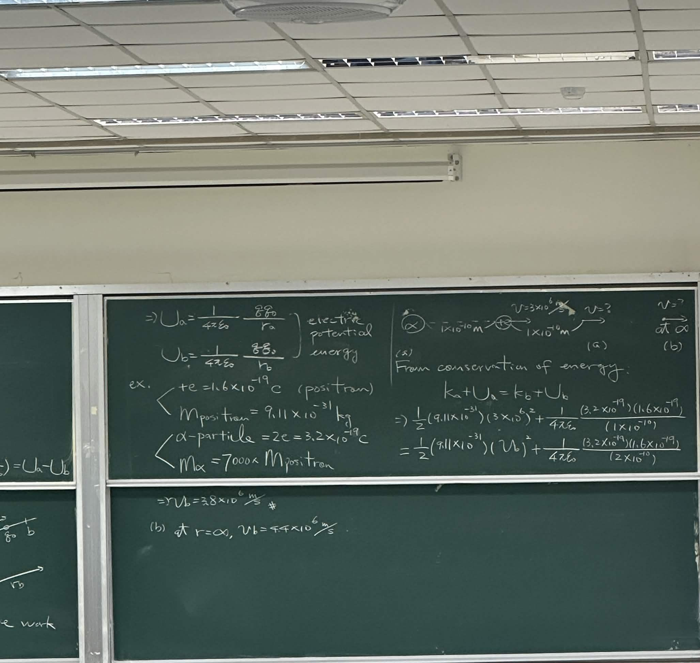
由能量守恆定律 (From conservation of energy)：
(a) 當正電子運動到距離 $\alpha$ 粒子為 $2 \times 10^{-10}\text{ m}$ 時，求其速度 $v_b$：
(b) 當正電子運動到無窮遠處 ($r \rightarrow \infty$) 時，求其速度 $v_b$：
(c) 如果運動的粒子是電子而不是正電子，該電子最遠可以移動多遠？(If the moving particle is an electron instead of a positron, how far can the electron travel?)
- 帶正電的 $\alpha$ 粒子 ($+q_\alpha$) 固定於左側。
- 帶負電的電子 ($-e$) 位於右側，初速度 $v = 3 \times 10^6\text{ m/s}$ 向右，受向左的吸引力 $F$（減速至停止）。
查看黑板原始筆記照片 (八、電子吸引與能量守恆)
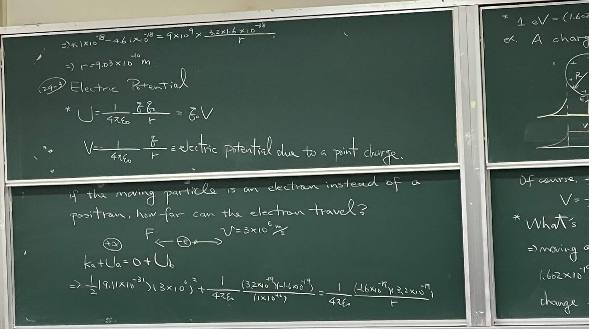
計算與推導過程：
九、電位 (Electric Potential)
查看黑板原始筆記照片 (九、電位與導體球及平行極板電位)
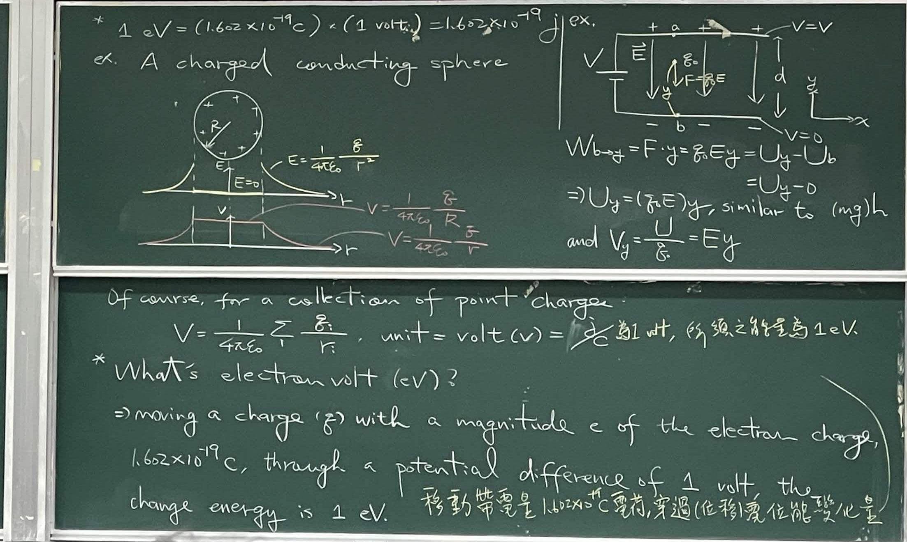
電位與電位能關係 (Relation between Potential and Potential Energy)：
點電荷產生的電位 (Electric potential due to a point charge)：
點電荷系統的電位疊加 (Potential for a collection of point charges)：
- 電位單位：$\text{volt (V)} = \text{J/C}$
- 物理意義：對 1 C 電荷而言，所須之能量為 1 J (For 1 C of charge, the required energy is 1 J)。
電子伏特定義 (What's electron volt (eV)?)：
Moving a charge ($q$) with a magnitude $e$ of the electron charge, $1.602 \times 10^{-19}\text{ C}$, through a potential difference of 1 volt, the change energy is 1 eV.
（中文說明：移動帶電量為 $1.602 \times 10^{-19}\text{ C}$ 的電荷，穿過（位移） 1 V 電位差，其位能變化量即為 1 eV。）
一個半徑為 $R$、帶電量為 $q$ 的導體球，電荷均勻分布於其表面：
- 電場強度 $E$ 隨距離 $r$ 的變化：
- 導體內部 ($r < R$)：$E=0$
- 導體外部 ($r \ge R$)：$E = \frac{1}{4\pi\varepsilon_0} \frac{q}{r^2}$
- 電位 $V$ 隨距離 $r$ 的變化：
- 導體內部 ($r < R$)：$V=\frac{1}{4\pi\varepsilon_0} \frac{q}{R}$（電位處處相等且為常體，故為常數）
- 導體外部 ($r \ge R$)：$V = \frac{1}{4\pi\varepsilon_0} \frac{q}{r}$
- 上平板 $a$ 帶正電，電位為 $V = V$。
- 下平板 $b$ 帶負電，電位為 $V = 0$。
- 兩板間距為 $d$，內部產生朝下的均勻電場 $\vec{E}$。
- 帶正電電荷 $q_0$ 從下板移動到高度 $y$ 處。
功與位能推導：
將電荷 $q_0$ 從下板 $b$ 移動到高度 $y$ 時，電場力作功與位能變化的關係：
十、電容與電介質 (Capacitance and Dielectrics)
25-2 圓柱形電容器 (Cylindrical Capacitor)
- 內部實心導體，半徑為 $r_a$，線電荷密度為 $+\lambda$。
- 外部圓柱殼導體，半徑為 $r_b$，線電荷密度為 $-\lambda$。
- 兩導體間為真空（Vacuum），圓柱總長度為 $L$。
查看黑板原始筆記照片 (十-一、圓柱形電容器電場與電位推導)
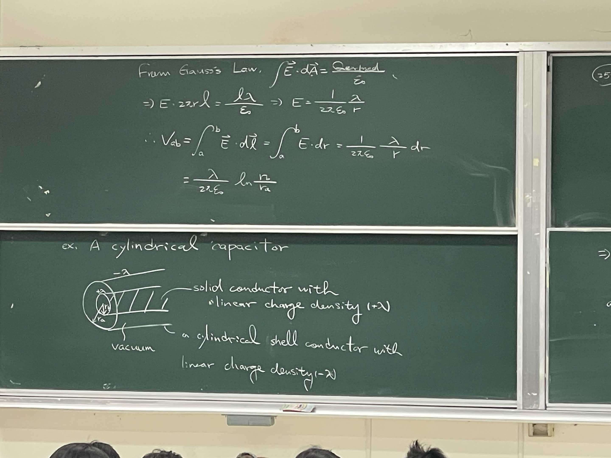
計算與推導過程：
① 由高斯定律 (From Gauss's Law)：
② 計算兩導體間的電位差 $V_{ab}$：
查看黑板原始筆記照片 (十-一、圓柱形電容量與同軸天線電纜)
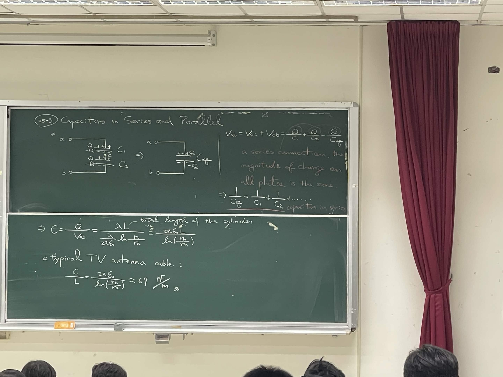
③ 計算電容值 $C$（設圓柱總長度為 $L$，即 total length of the cylinder = L）：
④ 應用範例：典型電視天線電纜 (A typical TV antenna cable)：
25-3 電容器的串聯與並聯 (Capacitors in Series and Parallel)
- 端點 $a$ 與 $b$ 之間串聯連接兩個電容器 $C_1$ 與 $C_2$。
- 串聯連接中，所有極板上的電荷大小皆相同（a series connection, the magnitude of charge on all plates is the same）。
查看黑板原始筆記照片 (十-二、電容器串聯公式推導)
串聯公式推導與計算：
① 端點 $a$、$b$ 之間總電位差等於各電位差之和：
② 由上式消去 $Q$ 後，得等效電容的倒數關係：
- 端點 $a$ 與 $b$ 之間並聯連接兩個電容器 $C_1$ 與 $C_2$。
- 並聯連接中，兩電容器承受相同的電位差 $V_{ab}$。
查看黑板原始筆記照片 (十-二、電容器並聯公式推導)
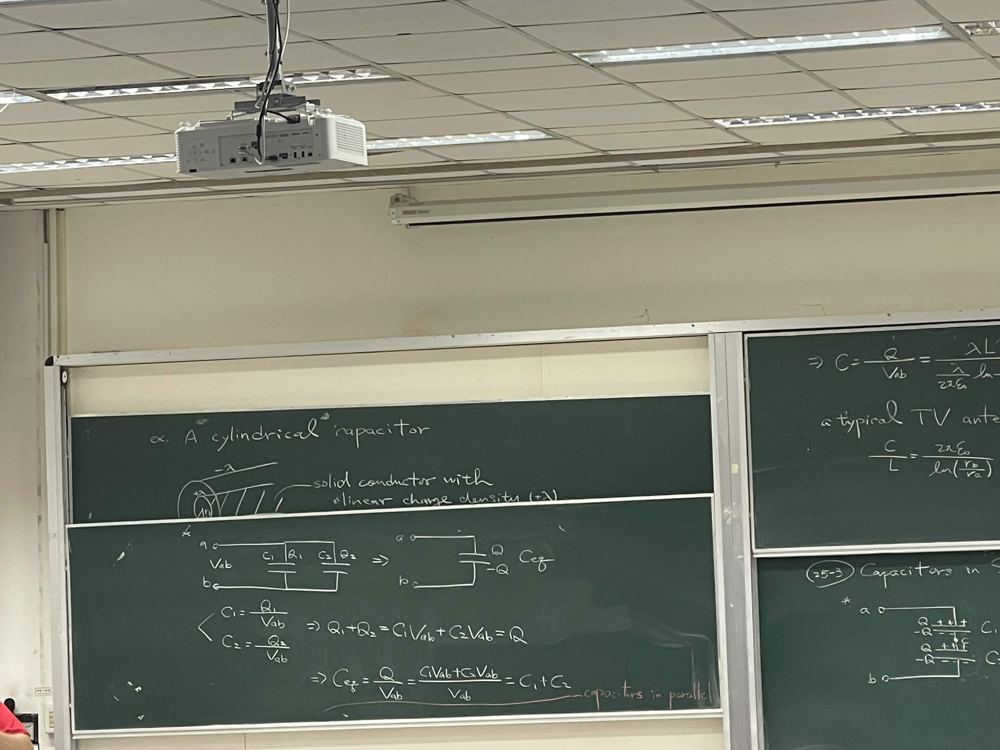
並聯公式推導與計算：
① 由電容定義可得各電容器之電荷：
② 等效電容 $C_{\text{eq}}$ 為總電荷與電位差之比值：
② 等效電容 $C_{\text{eq}}$ 為總電荷與電位差之比值：
範例場景與條件：
一個電容量為 $C_1 = 8.0\ \mu\text{F}$ 的電容器，先以電壓 $V_0 = 120\text{ V}$ 的電源充電，充電完成後將電源斷開。此時將其與另一個電容量為 $C_2 = 4.0\ \mu\text{F}$ 且未帶電的電容器並聯連接（如下電路圖所示）。當開關 $S$ 閉合時，電荷在兩個電容器之間進行重新分配，直至達到相同的並聯電壓 $V$：
計算與推導過程：
(a) 求 $C_1$ 充電完成後所儲存的電荷量 $Q_0$：
由電容量定義 $C = Q/V$，可直接求得：
(b) 求 $C_1$ 在電源斷開時所儲存的靜電能 $U_{\text{initial}}$：
利用 $U = \frac{1}{2}QV$ 公式計算：
(c) 當開關 $S$ 閉合時，求各電容器上的電荷量 $Q_1$ 與 $Q_2$：
根據電荷守恆定律，並聯後的總電荷量等於初始電荷量：
由於閉合後兩電容器呈並聯狀態，因此其兩端電位差 $V$ 相同（$V$ is the same, because it is in parallel）：
代入數值求得並聯後之電位差：
此時，$C_1$ 相當於對 $C_2$ 充電之電源（$C_1$ acts as a battery. $Q_0$ is redistributed to $C_2$），分配後兩電容器各自的電荷量為：
(d) 求開關 $S$ 閉合後，系統的總能量 $U_{\text{final}}$：
閉合後的系統總電場能量為各電容器能量之和：
比較開關閉合前後的總能量：
※ 能量損耗分析：系統的末能量小於初能量，減少的能量轉化為導線及開關處的熱能以及電磁輻射（$\Rightarrow$ circuit gets warmer, radiation of electromagnetic wave, ...）。
查看黑板原始筆記照片 (十-二、電荷再分配與能量計算)
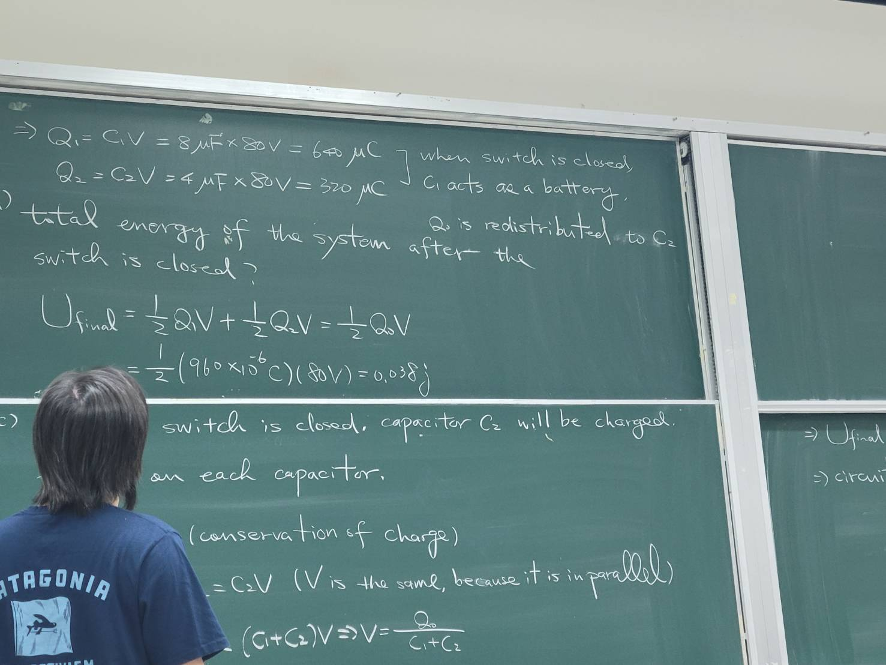
查看黑板原始筆記照片 (十-二、能量損耗物理意義說明)
查看黑板原始筆記照片 (十-二、電荷重分配黑板全景)
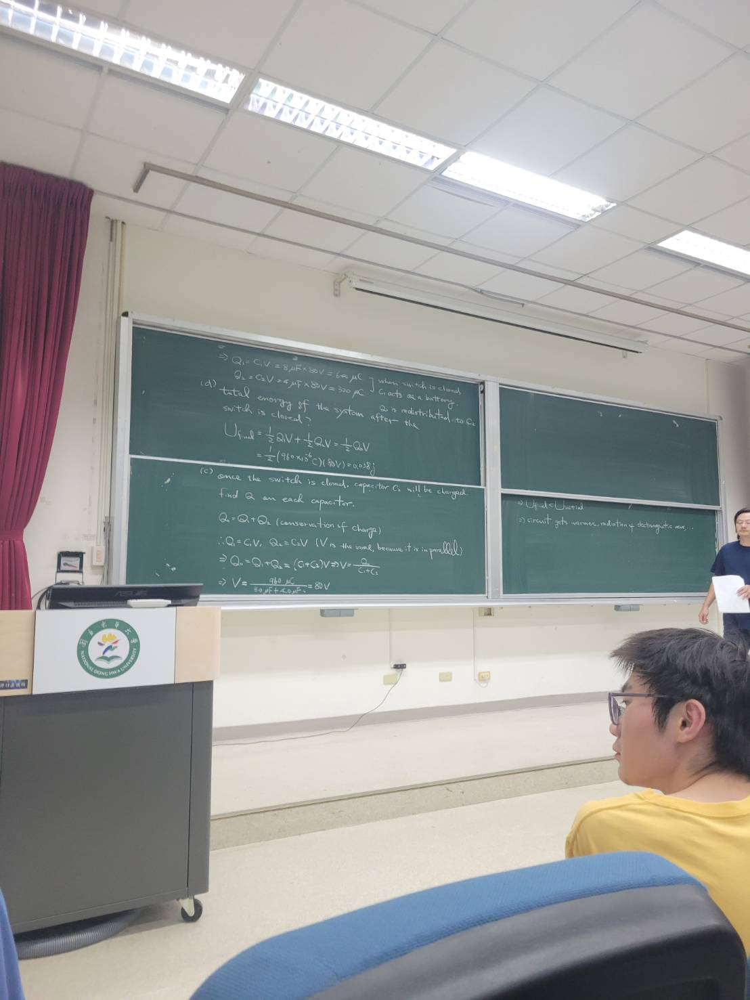
查看黑板原始筆記照片 (十一-三、電荷再分配 (a)(b) 與介電質功能)
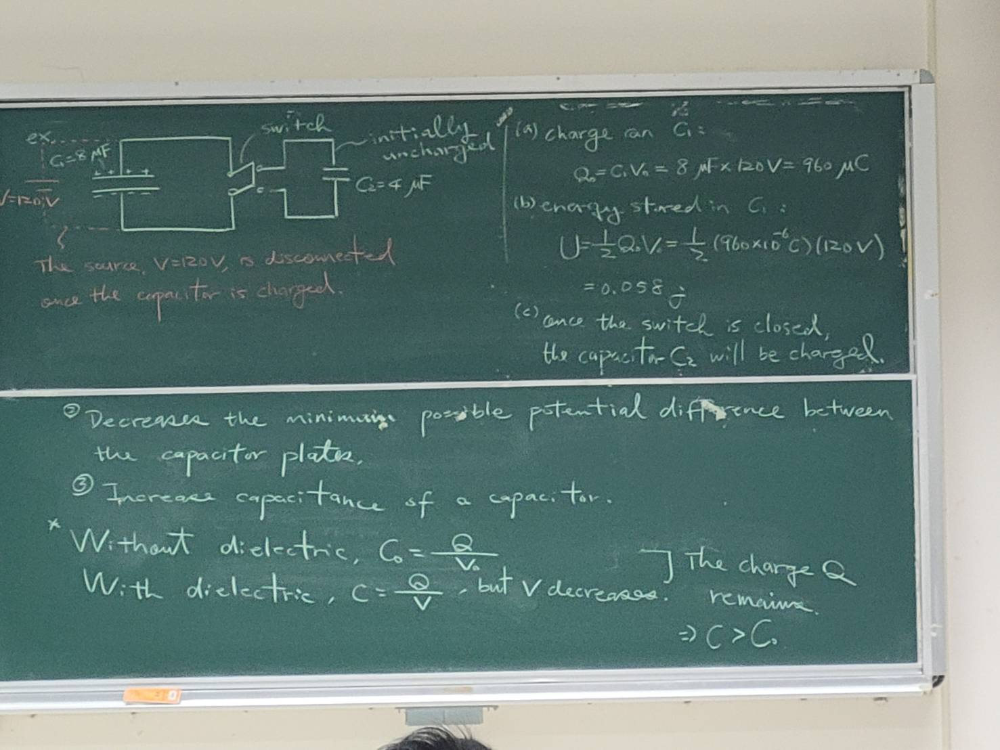
25-5 & 25-6 電介質與介電常數 (Dielectrics and Dielectric Constant)
一、介電常數 $K$ 的定義 (Definition of Dielectric Constant)：
當在平行板電容器的兩極板之間插入一塊介電質材料（例如玻璃、雲母等）後，其電容量會增大為原來的 $K$ 倍。介電常數 $K$ 以下列兩個等價方式定義：
其中 $C_0$ 為真空中的電容量、$C$ 為插入介電質後的電容量；$E_0$ 為真空中的電場強度、$E$ 為介電質內的電場強度。
※ $K$ 為無量綱的純數（$K$ has no units, just a pure number），且 $K \geq 1$。
二、介電質的物理作用 (Functions of a Dielectric)：
在電荷固定（即電容器與電源斷開）的條件下，插入介電質之後：
① 插入介電質 (dielectrics) 後，介電質被極化，產生感應面電荷密度 $\sigma_i$（induced $\sigma_i$），部分抵消原有電場。
② 電場 $E$ 下降 (decreases)，因為 $E \propto (\sigma - \sigma_i)$，故 $E < E_0$。
③ 電壓 $V$ 下降 ($V = Ed$)，因此電容量 $C = Q/V$ 上升：$C > C_0$。
總結（不含介電質 vs 含介電質）：
三、介電質容電率 $\varepsilon$ 的定義 (Definition of Dielectric Permittivity)：
其中 $\varepsilon_0 = 8.854 \times 10^{-12}\text{ F/m}$ 為真空介電常數。$\varepsilon$ 的意義在於將介電質的影響直接包含到容電率中，使得含介電質的電容量公式寫為：
$$C = K C_0 = K \varepsilon_0 \frac{A}{d} = \varepsilon \frac{A}{d}$$四、感應面電荷密度 $\sigma_i$ 的推導 (Derivation of Induced Surface Charge Density)：
利用電場比值定義 $K = E_0 / E$，其中 $E_0 = \sigma / \varepsilon_0$ 而 $E = (\sigma - \sigma_i) / \varepsilon_0$，可得：
此公式稱為感應面電荷密度公式（induced surface charge density）。當 $K \to \infty$ 時 $\sigma_i \to \sigma$（導體的極端情形）；當 $K = 1$ 時 $\sigma_i = 0$（真空）。
查看黑板原始筆記照片 (十-三、介電質定義與公式 - 全景)
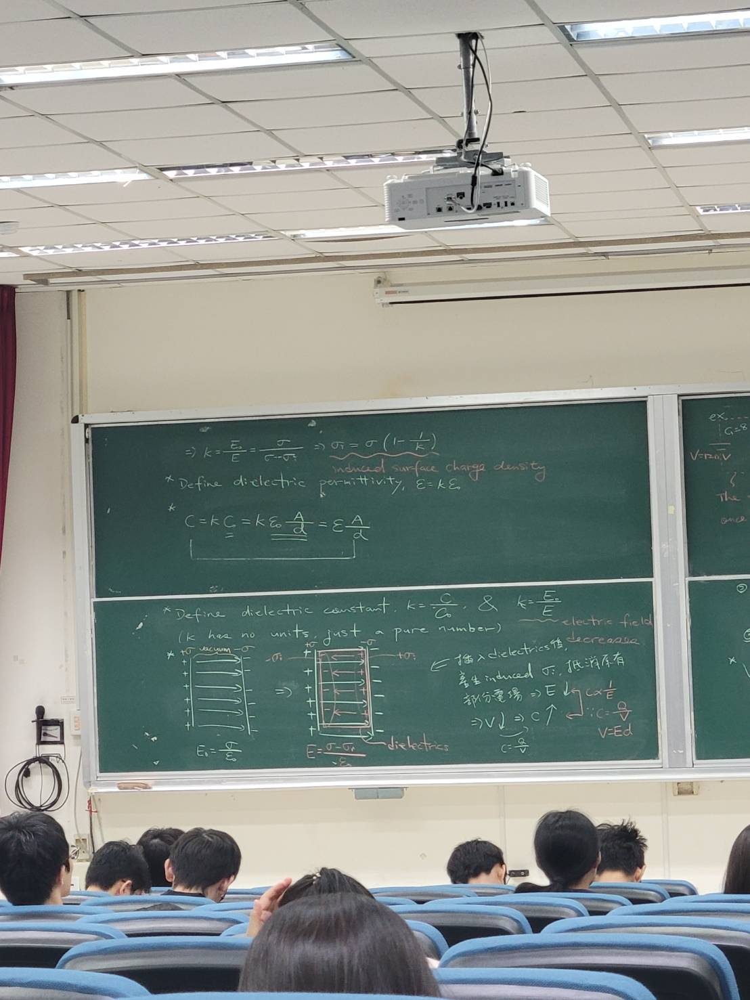
查看黑板原始筆記照片 (十-三、介電質定義與公式 - 教授講解特寫)
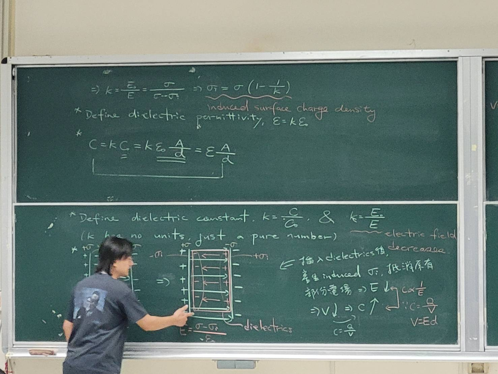
查看黑板原始筆記照片 (十-三、電容器範例 (a)(b) 與介電質功能)
25-7 介電質中的高斯定律 (Gauss's Law in Dielectrics)
物理場景說明：
當在平行板電容器之間插入介電常數為 $K$ 的介電質時，極板上的自由電荷密度為 $\sigma$，而介電質表面會產生感應極化電荷密度 $\sigma_i$。我們選取跨越導體與介電質邊界的一個矩形高斯面進行通量積分：
公式推導過程：
① 通過高斯面的電通量僅存在於右側位於介電質內部的截面上（左半部在導體內部，電場 $E = 0$）：
② 已知感應電荷密度 $\sigma_i$ 與自由電荷密度 $\sigma$ 的關係為：
③ 將其代入電場公式，消去感應電荷密度 $\sigma_i$：
④ 乘以高斯面面積 $A$，即可得到介電質中的高斯定律一般向量形式：
※ 這裡的 $Q_{\text{enclosed, free}}$ 代表高斯面內包圍的自由電荷（即僅極板上的電荷，排除介電質表面的感應電荷）。
介電質插入後的物理量變化總結 (Summary of Dielectric Insertion)：
當極板電荷 $Q$ 保持不變時，插入介電質將導致：
- 極板電量 $Q$ 保持不變 ($Q = Q_0$)。
- 介電率 $\varepsilon$ 增加為原本的 $K$ 倍：$\varepsilon = K \varepsilon_0$。
- 電容 $C$ 增加為原本的 $K$ 倍：$C = K C_0$（其中 $K \equiv C/C_0$ 為介電常數，dielectric constant）。
- 電場 $E$ 減少為原本的 $1/K$ 倍：$E = \frac{E_0}{K}$。
查看黑板原始筆記照片 (十-三、介質高斯定律推導與物理量變化)
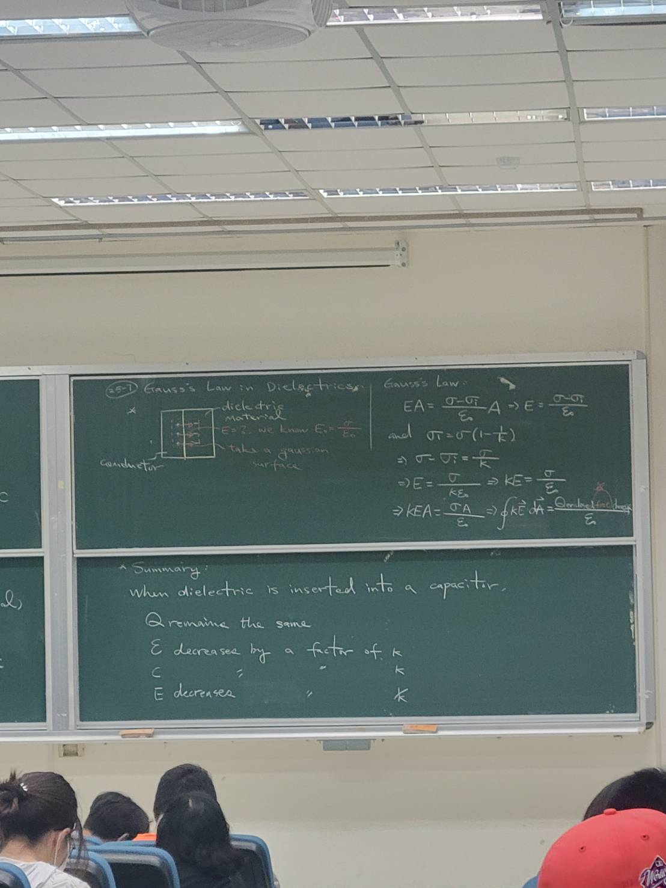
查看黑板原始筆記照片 (十-三、介面高斯面與極化電荷關係)
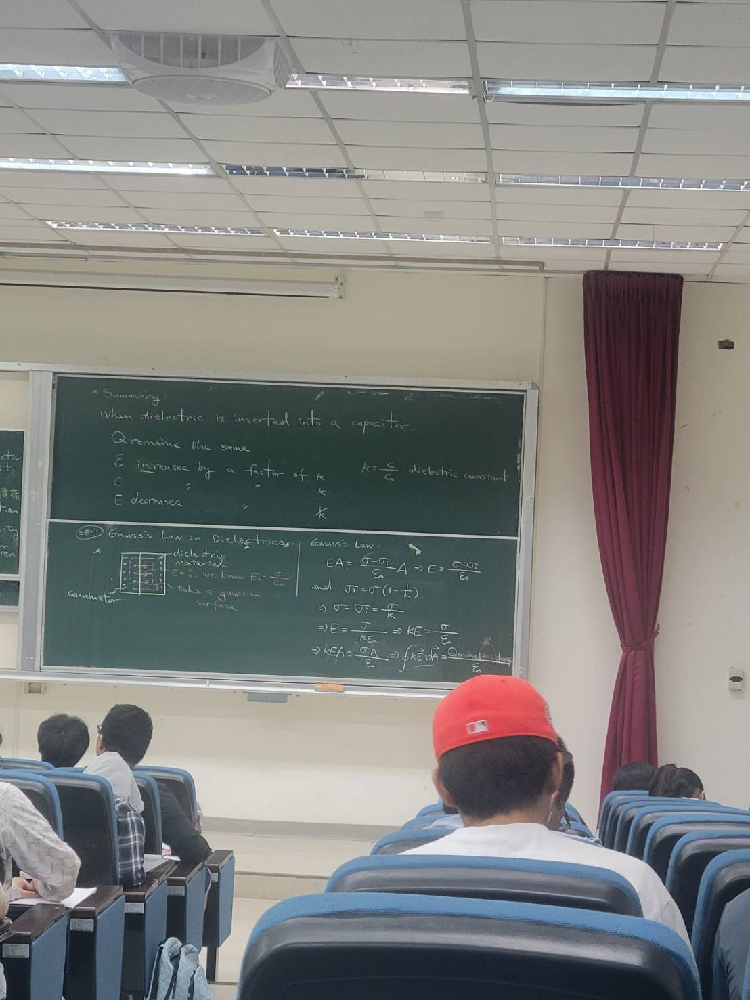
查看黑板原始筆記照片 (十-三、介電高斯面黑板全景)
題目條件：
- 平行板電容器極板面積 $A = 0.2\text{ m}^2$，板距 $d = 0.01\text{ m}$。
- 未插入介電質時的電位差 $V_0 = 3000\text{ V}$。
- 插入介電質後的電位差變為 $V = 1000\text{ V}$。
計算與求值過程：
(a) 求未插入介電質時的電容 $C_0$：
(b) 求極板電荷量 $Q$：
(c) 求插入介電質後的電容 $C$：
(d) 求介電常數 $K$：
(e) 求介電質的介電率 $\varepsilon$：
(f) 求介電質表面的感應電荷量 $Q_i$：
(g) 求未插入介電質時的電場強度 $E_0$：
(h) 求插入介電質後的電場強度 $E$：
查看黑板原始筆記照片 (十-三、介電電容計算範例)
十一、磁場與磁力 (Magnetic Field and Magnetic Forces)
27-1 磁場與磁通量 (Magnetic Field and Magnetic Flux)
帶電粒子在磁場中所受之磁力：
由實驗結果推導出運動電荷在磁場中所受之磁力公式（derived from experiments）：
磁場 $\vec{B}$ 的單位：
- $\text{units of } \vec{B} \equiv \text{tesla (T)}$
- $1\text{ tesla} = 1\text{ T} = 1\ \frac{\text{N}}{\text{A}\cdot\text{m}} = 10^4\text{ Gauss (G)}$
帶電粒子同時在電場與磁場中所受的總力（洛倫茲力）：
磁通量 (Magnetic Flux) 定義：
穿過封閉曲面的總磁通量 (Total magnetic flux through a closed surface)：
解釋原因（why?）：
- 磁力線總是連續的（magnetic field lines are always continuous）。
- 磁力線絕無端點/起終點（magnetic field lines never have end points）。
- 不同於電力線，電力線始於並終於電荷（unlike electric field lines that begin and end on electric charges）。
查看黑板原始筆記照片 (十一-一、磁場基本定義與受力)
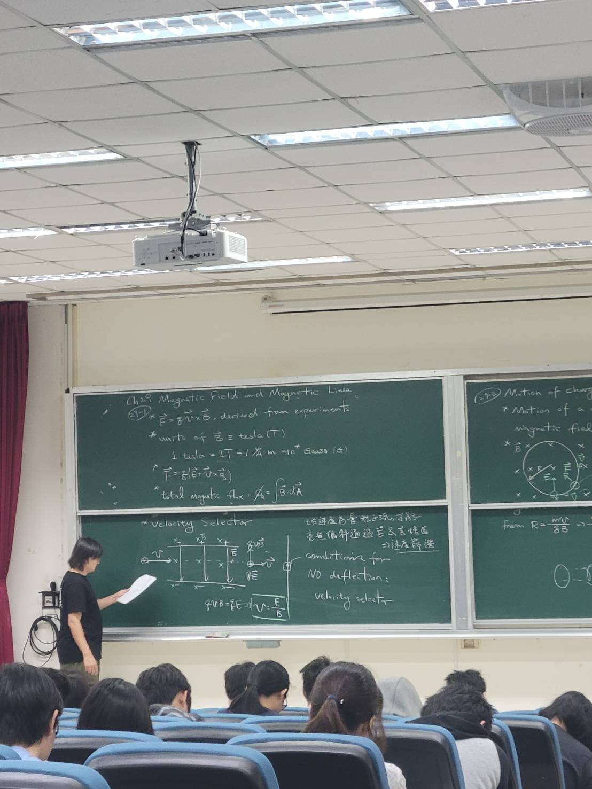
查看黑板原始筆記照片 (十一-一、封閉曲面磁通量性質)
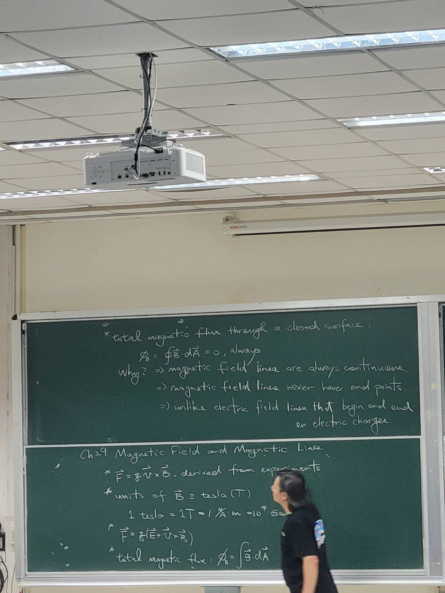
27-2 帶電粒子在磁場中的運動 (Motion of Charged Particles in a Magnetic Field)
等速率運動性質：
帶電粒子在純磁場作用下的運動，其速率恆保持不變（Motion of a charge particle under the action of a magnetic field is always motion with constant speed）。
垂直磁場中的圓周運動 (Circular Motion in a Perpendicular B-field)：
- 帶正電粒子以初速度 $\vec{v}$ 垂直射入均勻磁場 $\vec{B}$（磁場方向垂直穿入紙面）。
- 粒子受磁力 $\vec{F}_B$ 作為向心力，在垂直平面上作圓周運動。
公式推導（$\vec{v} \perp \vec{B}$）：
角頻率與迴旋頻率 (Angular & Cyclotron Frequency)：
非均勻磁場運動——磁瓶 (Magnetic Bottle)：
- 非均勻磁場，帶電粒子的運動方向與磁場有夾角。
- 粒子在兩端磁場較強處受力反射，在中間磁場較弱處螺旋前進，形成磁約束（磁瓶）。
查看黑板原始筆記照片 (十一-二、帶電粒子在磁場中的運動與磁瓶)
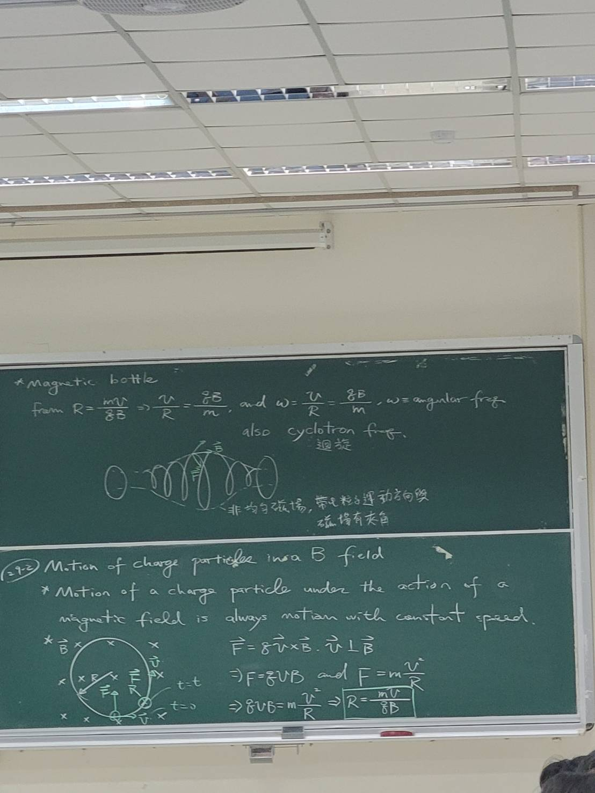
27-3 速度選擇器 (Velocity Selector)
- 帶正電粒子射入正交的電場 $\vec{E}$ 與磁場 $\vec{B}$ 區域。
- 粒子同時受向下的電場力 $F_E = qE$ 與向上的磁場力 $F_B = qvB$。
- 當速度達到特定值時，兩力平衡，粒子無偏斜通過（conditions for NO deflection: velocity selector）。
公式推導（若速度為特定值，才能無偏斜通過 $\vec{E}$ & $\vec{B}$ 場區 $\Rightarrow$ 速度篩選）：
查看黑板原始筆記照片 (十一-三、速度選擇器)
十二、電流與電阻 (Current and Resistance)
27-1 & 27-2 電流與漂移速度 (Electric Current and Drift Velocity)
27-1 電荷運動基本觀念 (Charge in Motion)：
- 運動中的電荷會形成電流（charge in motion $\Rightarrow$ electric current）。
- 當電荷的運動發生在一個形成閉合迴路的導電路徑中時，此路徑稱為電路（when this type of motion takes place within a conducting path that forms a closed loop, the path is called an electric circuit）。
- 人類的神經系統即是一種特化的電路（the nervous systems of humans are specialized electric circuit）。
27-2 電流與漂移速度定義 (Current and Drift Velocity)：
① 電流的數學定義：
電流 $I$ 定義為單位時間內通過某截面的電荷量：
※ 電流是一個純量，並非向量（$I$ is not a vector quantity）。
② 電流的單位：
- SI 單位制為安培 (Ampere, A)。
- $1\text{ A} = 1\text{ C/s}$ （每秒流過 1 庫倫的電荷量）。
③ 漂移速度的微觀模型推導：
考慮一段截面積為 $A$ 的導線，內部電荷載子（每個帶電量為 $q$）在電場 $\vec{E}$ 作用下以平均漂移速度 $\vec{v}_d$ 運動。在時間微元 $dt$ 內，電荷運動的距離為 $v_d dt$：
推導過程：
設 $n$ 為載子濃度（concentration of charge carriers）。
在長度為 $v_d dt$、截面積為 $A$ 的體積微元 $A v_d dt$ 內，所包含的總電荷個數為：
$$\text{電荷個數} = n(A v_d dt)$$這段體積內通過截面的總電量 $dq$ 為：
$$dq = q \cdot n(A v_d dt) = n q v_d A dt$$將其代入電流定義 $I = \frac{dq}{dt}$，可得微觀電流公式：
$$I = n q v_d A$$※ 其中 $q$ 為每個載子的電量（charge of each particle），$v_d$ 為漂移速度（drift velocity），$A$ 為截面積（cross section area）。
④ 電流密度 (Current Density)：
定義電流密度 $J$ 為單位面積的電流大小：
電流密度的向量形式（與載子運動速度方向相同）：
$$\vec{J} = n q \vec{v}_d \quad \text{(vector current density)}$$查看黑板原始筆記照片 (十二-一、電流與漂移速度微觀推導)
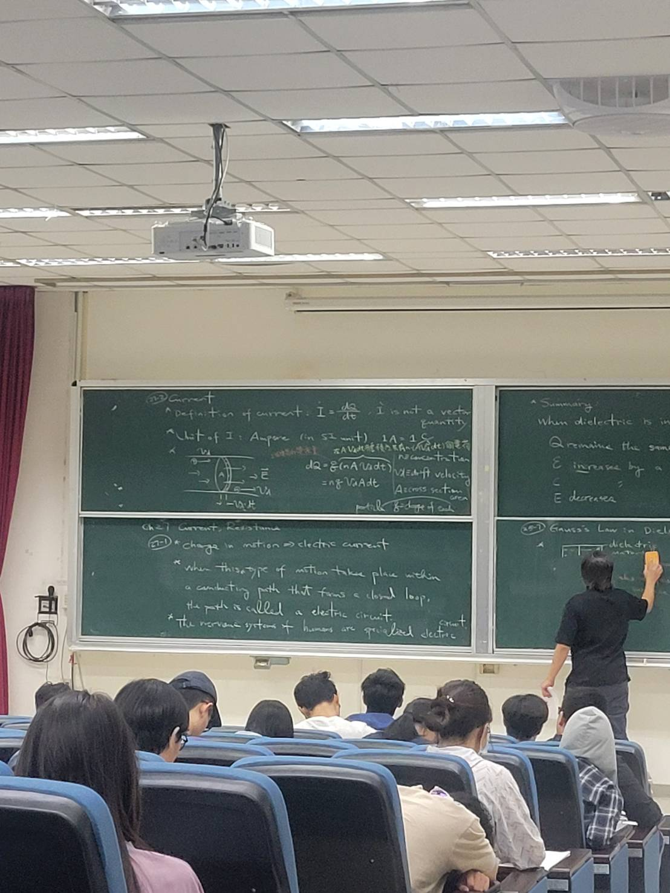
查看黑板原始筆記照片 (十二-一、電流基礎性質與電路系統)
題目條件：
- 銅線直徑 $d = 1.02\text{ mm}$。
- 通過電流 $I = 1.67\text{ A}$。
- 銅的自由電子濃度 $n = 8.5 \times 10^{28}\text{ /m}^3$。
計算與分析過程：
(a) 求銅線截面積 $A$ 與電流密度 $J$：
(b) 求電子漂移速度 $v_d$：
(c) 求電子流經 1 m 長導線所需時間 $t$：
(d) 與隨機熱運動速度比較 (Comparison with random thermal speed)：
常溫下，電子的隨機熱運動速度（random motion speed）約為：
$$v_{\text{thermal}} \approx 10^6\text{ m/s}$$兩者比例關係：
$$\Rightarrow v_d \approx 10^{-10} \times v_{\text{thermal}}$$※ 漂移速度極慢，大約僅為電子隨機熱運動速度的 $10^{-10}$ 倍。
(e) 思考題：為什麼打開電燈開關時，燈會立刻亮起？ (Conceptual Question)
【黑板原意解答說明】：
雖然個別電子的漂移速度極慢 ($0.15\text{ mm/s}$)，但當開關接通時，電場建立並以接近光速的速度在整條導線中傳播。這使得導線中所有位置的自由電子幾乎在同一時間感受到電場力並開始定向移動，因此燈泡內的電子會立即產生運動而發光，而不需要等待開關處的電子一路「走」到燈泡處。
查看黑板原始筆記照片 (十二-一、銅導線漂移速度與熱運動比較範例)
27-3 電阻率與電導率 (Resistivity and Conductivity)
電阻率 (Resistivity) 定義：
電阻率 $\rho$ 定義為電場強度 $E$ 與電流密度 $J$ 的比值（electric field / current density）：
物理意義：電阻率 $\rho$ 越大，表示在相同的電流密度 $J$ 下，所需的電場強度 $E$ 越大（$\rho \uparrow$, then $E \uparrow$, in order to carry the same current density）。
電阻率 $\rho$ 的單位推導：
電導率 (Conductivity) 定義：
電導率 $\sigma$ 為電阻率的倒數：
電阻率的溫度相依性 (Temperature dependence of resistivity)：
一般而言，材料的電阻率隨溫度變化關係可近似表示為：
不同材料的電阻率對溫度變化曲線：
- 金屬 (Metal)：電阻率 $\rho$ 隨溫度 $T$ 升高而增加。
- 半導體 (Semiconductor)：電阻率 $\rho$ 隨溫度 $T$ 升高而顯著降低。這是因為溫度升高時，有更多自由電荷參與導電（T↑, more free charge take part in conduction）。
- 超導體 (Superconductor)：當溫度降至臨界溫度 $T_c$ 以下時，電阻率突然躍降為 0（具有零電阻性質）。
查看黑板原始筆記照片 (十二-二、電阻率與溫度變化關係)
27-4 電阻與歐姆定律 (Resistance and Ohm's Law)
歐姆定律的微觀形式與宏觀推導：
考慮一條長度為 $L$、橫截面積為 $A$ 的均勻導線，在其兩端施加電位差 $V$，導線內將產生均勻電場 $E = \frac{V}{L}$。
根據電阻率定義 $\rho = \frac{E}{J}$，可得電流密度 $J$：
將電流密度 $J = \frac{I}{A}$ 與電場 $E = \frac{V}{L}$ 代入上式：
$$\frac{I}{A} = \frac{V}{\rho L} \quad \Rightarrow \quad V = I \left( \rho \frac{L}{A} \right)$$定義導線的電阻 (Resistance) $R$ 為：
$$R = \rho \frac{L}{A}$$即可導出宏觀的歐姆定律 (Ohm's Law)：
$$V = I R \quad \#$$物理意義：電阻 $R$ 與導體材料的電阻率 $\rho$ 成正比，與長度 $L$ 成正比，與截面積 $A$ 成反比。電阻的單位為歐姆 ($\Omega$, Ohm)，$1\ \Omega = 1\ \text{V/A}$。
均勻電阻器物理構造模型示意圖：
查看黑板原始筆記照片 (十二-二、歐姆定律與電阻定義)
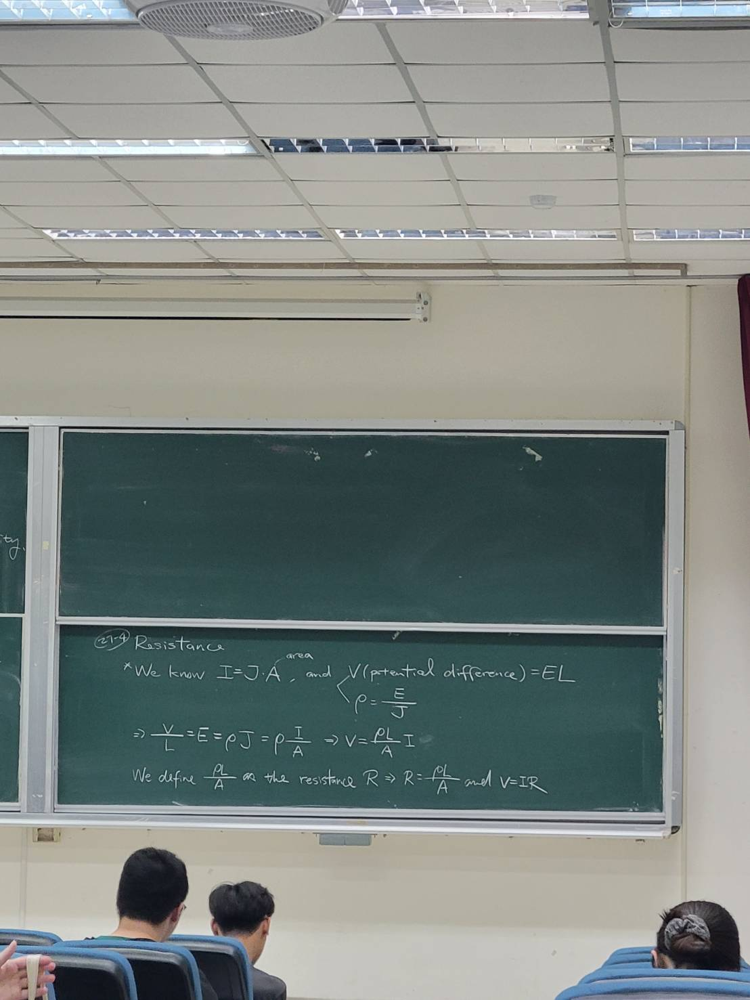
範例：同軸圓柱體徑向電流之電阻計算 (Radial resistance of a coaxial cylinder)
- 長度為 $L$ 的同軸圓柱體，內半徑為 $a$，外半徑為 $b$。
- 電流沿徑向自內向外流過圓柱體（current flows radially through the cylinder）。
- 此時電流所通過的長度與面積隨半徑 $r$ 變化。
計算與積分推導過程：
① 根據電阻定義 $R = \rho \frac{L}{A}$，取半徑 $r$ 處、厚度為 $dr$ 的薄殼作為微元：
② 對微元自內半徑 $a$ 至外半徑 $b$ 進行積分：
查看黑板原始筆記照片 (十二-二、圓柱體徑向電阻範例)
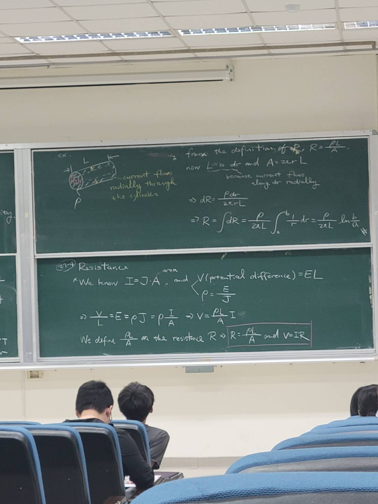
⭐ 公式總整理 (Formula Summary)
※ 本表收錄筆記中 1 至 12 章所有核心公式。標有 ⭐ 核心必記 的公式為學科基礎，必須熟記；標有 💡 延伸推導 的公式則為特定幾何結構的積分推導結果，建議理解其推導過程。
| 章節 / 主題 | 核心公式 (Formula) | 重要程度與變數說明 (Description) |
|---|---|---|
| 一、庫倫定律 (Coulomb's Law) |
$$F = k \frac{|q_1 q_2|}{r^2} = \frac{1}{4\pi\varepsilon_0} \frac{|q_1 q_2|}{r^2}$$ | ⭐ 核心必記 兩靜止點電荷間的作用力。 $k \approx 8.99 \times 10^9\ \text{N}\cdot\text{m}^2/\text{C}^2$ $\varepsilon_0 \approx 8.85 \times 10^{-12}\ \text{C}^2/(\text{N}\cdot\text{m}^2)$ |
| 二、電場與點電荷電場 (Electric Field) |
$$\vec{E} = \frac{\vec{F}_0}{q_0}$$ | ⭐ 核心必記 電場強度的物理定義（單位：$\text{N/C}$ 或 $\text{V/m}$）。 |
| $$\vec{E} = \frac{1}{4\pi\varepsilon_0} \frac{q}{r^2} \hat{r}$$ | ⭐ 核心必記 點電荷產生的電場。正電荷朝外，負電荷朝內。 |
|
| 三、均勻電場電荷運動 (Charged Motion) |
$$\vec{a} = \frac{q\vec{E}}{m}$$ | ⭐ 核心必記 帶電粒子在均勻電場中所受的加速度（通常忽略重力）。 |
| 四、電場計算與疊加 (Superposition) |
$$\vec{E} = \sum \vec{E}_i = \frac{1}{4\pi\varepsilon_0} \sum \frac{q_i}{r_i^2}\hat{r}_i$$ | ⭐ 核心必記 電場疊加原理（多電荷系統之向量求和）。 |
| $$E_x = \frac{1}{4\pi\varepsilon_0} \frac{Q x}{(x^2 + a^2)^{3/2}}$$ | 💡 延伸推導 均勻帶電圓環（半徑 $a$，總電荷 $Q$）在軸線 $x$ 處的電場強度。 |
|
| 五、帶電圓盤軸線電場 (E-Field of Disk) |
$$E_x = \frac{\sigma}{2\varepsilon_0} \left[ 1 - \frac{1}{\sqrt{1 + (R/x)^2}} \right]$$ | 💡 延伸推導 均勻帶電圓盤（半徑 $R$，面電荷密度 $\sigma$）在軸線 $x$ 處的電場。 |
| $$E = \frac{\sigma}{2\varepsilon_0}$$ | ⭐ 核心必記 無限大均勻帶電平板的電場（為均勻電場，與距離無關）。 |
|
| 六、電偶極 (Electric Dipoles) |
$$p = qd$$ | ⭐ 核心必記 電偶極矩大小。向量方向由負電荷（⊖）指向正電荷（⊕）。 |
| $$\vec{\tau} = \vec{p} \times \vec{E}$$ | ⭐ 核心必記 電偶極在均勻外電場中所受之力矩。大小為 $\tau = pE\sin\phi$。 |
|
| $$U = -\vec{p} \cdot \vec{E}$$ | ⭐ 核心必記 電偶極在均勻外電場中的靜電位能。大小為 $U = -pE\cos\phi$。 |
|
| $$E = \frac{\sigma}{\varepsilon_0}$$ | ⭐ 核心必記 兩塊帶相反電荷的無限大平行板之間的均勻電場（外部電場為 0）。 |
|
| 七、高斯定律 (Gauss's Law) |
$$\oint \vec{E} \cdot d\vec{A} = \frac{Q_{\text{enclosed}}}{\varepsilon_0}$$ | ⭐ 核心必記 高斯定律一般式。穿過任意封閉曲面的淨電通量 $\Phi_E$ 與其包圍的淨電荷量成正比。 |
| $$E = \frac{\lambda}{2\pi\varepsilon_0 r}$$ | 💡 延伸推導 無限長均勻帶電線（電荷密度 $\lambda$）在距離 $r$ 處的電場。 |
|
| $$E = \frac{Q r}{4\pi\varepsilon_0 R^3}\ (r < R) E = \frac{Q}{4\pi\varepsilon_0 r^2}\ (r > R)$$ |
💡 延伸推導 均勻帶電絕緣球體（非導體，半徑 $R$）在內部與外部的電場。 |
|
| $$E = 0\ (r < R) E = \frac{q}{4\pi\varepsilon_0 r^2}\ (r > R)$$ |
💡 延伸推導 帶電導體球（半徑 $R$）在內部（電場為 0）與外部的電場。 |
|
| 八、電位能 (Potential Energy) |
$$U = \frac{1}{4\pi\varepsilon_0} \frac{q q_0}{r}$$ | ⭐ 核心必記 兩點電荷系統的靜電位能。無限遠處為位能零點。 |
| $$W_{a\rightarrow b} = U_a - U_b = -\Delta U$$ | ⭐ 核心必記 電場力做功與位能變化的關係（電場力做正功，系統位能減少）。 |
|
| 九、電位 (Electric Potential) |
$$V = \frac{U}{q_0} \quad \Rightarrow \quad V = \frac{1}{4\pi\varepsilon_0} \frac{q}{r}$$ | ⭐ 核心必記 電位定義（單位：$\text{V} = \text{J/C}$）與點電荷的電位公式。 |
| $$V = E y$$ | ⭐ 核心必記 均勻電場中電位與高度 $y$ 的關係（以負極板 $y=0$ 為零電位面）。 |
|
| $$V = \frac{q}{4\pi\varepsilon_0 R}\ (r < R) V = \frac{q}{4\pi\varepsilon_0 r}\ (r \ge R)$$ |
💡 延伸推導 帶電導體球（電荷完全分布於表面）內部與外部的電位分布。 |
|
| $$1\text{ eV} \approx 1.602 \times 10^{-19}\text{ J}$$ | ⭐ 核心必記 電子伏特。一個電子電荷穿過 1 V 電位差所獲得的能量。 |
|
| 十、電容與電介質 (Capacitance & Dielectrics) |
$$C = \frac{Q}{V}$$ | ⭐ 核心必記 電容量定義。單位為法拉（$\text{F} = \text{C/V}$）。 |
| $$C_0 = \varepsilon_0 \frac{A}{d} \quad \Rightarrow \quad C = K \varepsilon_0 \frac{A}{d}$$ | ⭐ 核心必記 平行板電容器的電容量（真空與填入介電常數 $K$ 介質時）。 |
|
| $$C = \frac{2\pi\varepsilon_0 L}{\ln(r_b/r_a)}$$ | 💡 延伸推導 同軸圓柱形電容器之電容量。 |
|
| $$\frac{1}{C_{\text{eq}}} = \sum \frac{1}{C_i}\ \text{(串聯)} C_{\text{eq}} = \sum C_i\ \text{(並聯)}$$ |
⭐ 核心必記 電容器串聯（電荷相等、電壓相加）與並聯（電壓相等、電荷相加）的等效電容。 |
|
| $$U = \frac{1}{2}QV = \frac{1}{2}CV^2 = \frac{Q^2}{2C}$$ | ⭐ 核心必記 電容器所儲存的靜電場能量。 |
|
| $$K = \frac{C}{C_0} = \frac{E_0}{E}$$ | ⭐ 核心必記 介電常數 $K$。極板斷開（電荷固定）時，加入介電質使電場、電壓降為 $1/K$。 |
|
| $$\sigma_i = \sigma \left(1 - \frac{1}{K}\right)$$ | 💡 延伸推導 介電質表面的感應（極化）電荷密度。 |
|
| 十一、磁場與磁力 (Magnetic Fields) |
$$\vec{F} = q\vec{v} \times \vec{B}$$ | ⭐ 核心必記 運動電荷在磁場中所受之磁力（與速度垂直，故磁力不做功，速率不變）。 |
| $$\vec{F} = q(\vec{E} + \vec{v} \times \vec{B})$$ | ⭐ 核心必記 洛倫茲力。帶電粒子同時在電磁場中的綜合受力。 |
|
| $$\Phi_B = \oint \vec{B} \cdot d\vec{A} = 0$$ | ⭐ 核心必記 磁通量高斯定律。封閉曲面淨磁通量恆為零（無磁單極）。 |
|
| $$R = \frac{mv}{qB}$$ | ⭐ 核心必記 帶電粒子垂直射入均勻磁場後作等速率圓周運動的軌跡半徑。 |
|
| $$\omega = \frac{qB}{m} \quad \Rightarrow \quad f = \frac{qB}{2\pi m}$$ | ⭐ 核心必記 迴旋角頻率與頻率（與粒子圓周軌跡半徑、速率無關）。 |
|
| 十二、電流與電阻 (Current & Resistance) |
$$I = \frac{dq}{dt} = n q v_d A$$ | ⭐ 核心必記 電流定義與微觀流動模型。$n$: 電子濃度，$v_d$: 漂移速度，$A$: 截面積。 |
| $$J = \frac{I}{A} = n q v_d$$ | ⭐ 核心必記 電流密度。單位面積的電流。 |
|
| $$\rho = \frac{E}{J} \quad ; \quad \sigma = \frac{1}{\rho}$$ | ⭐ 核心必記 材料電阻率 $\rho$ 與電導率 $\sigma$ 的物理定義。 |
|
| $$\rho(T) = \rho_0 [1 + \alpha(T - T_0)]$$ | ⭐ 核心必記 電阻率的溫度特性。$\alpha$: 溫度係數。 |
|
| $$R = \rho \frac{L}{A} \quad ; \quad V = IR$$ | ⭐ 核心必記 均勻導體電阻的幾何決定公式與歐姆定律。 |
📝 經典題目與解題思路速查 (Classical Examples & Solutions)
※ 本表整理了筆記中所有出現的經典計算題型與範例，提煉出最核心的物理考點與步驟化解題邏輯（Step-by-Step），以便在考試前進行高效率複習。
| 章節與經典範例 | 核心考點 / 物理現象 | 解題核心步驟 (Step-by-Step) | 關鍵結論 / 重要數值 |
|---|---|---|---|
| 一、庫倫定律 求電荷 Q 上的淨力 |
多電荷靜電力向量疊加與幾何分析。 |
1. 先利用庫倫定律求得兩兩電荷間的作用力大小：$F = k\frac{|q q'|}{r^2}$。 2. 依電荷正負判定受力方向（同性相斥，畫出向量）。 3. 利用對稱性簡化計算：本題中 $y$ 軸對稱使得受力在 $y$ 方向之分力完全抵消（$\sum F_y = 0$）。 4. 進行 $x$ 方向分力疊加：$F_{\text{net}} = 2 F_1 \cos\theta$，其中 $\cos\theta$ 由幾何三角形邊長比值決定。 |
淨力方向朝 $+x$ 軸。 代入數值求得： $$\mathbf{F_{\text{net}} = 0.46\text{ N}}$$ |
| 三、電荷在電場中的運動 均勻電場中的電子運動 |
帶電粒子在均勻電場中運動時，受力、加速度與運動學公式之綜合應用。 |
1. 計算並比較電場力 $F_e = qE$ 與重力 $F_g = mg$ 大小關係。確認 $F_e \gg F_g$，故重力可完全忽略。 2. 依牛頓第二定律求得帶電粒子之加速度大小與方向：$a_y = qE / m$。 3. 利用等加速度直線運動公式求末速度：$v_y = \sqrt{2 a_y y}$（由靜止釋放，位移為 $y$）。 |
電子加速度極大： $a_y = 1.76 \times 10^{15}\ \text{m/s}^2$ 下落 $1\text{ cm}$ 時之末速度： $$\mathbf{v_y = 5.9 \times 10^6\text{ m/s}}$$ |
| 四、帶電圓環電場 均勻帶電圓環軸線上之電場 |
利用連續帶電體「微元切割法」求電場，並利用極限分析驗證。 |
1. 將圓環切割為微元長度 $ds$，其帶電量為 $dq = \lambda ds = \frac{Q}{2\pi a} ds$。 2. 寫出微元在軸線 $P$ 點產生之微元電場：$dE = \frac{dq}{4\pi\varepsilon_0 (x^2+a^2)}$。 3. 根據對稱性，垂直軸分力相互抵消，僅積軸向分量：$dE_x = dE \cos\alpha$，其中 $\cos\alpha = \frac{x}{\sqrt{x^2+a^2}}$。 4. 提取常數項，對環積一圈（$\int ds = 2\pi a$）得出總電場。 |
軸線電場公式： $$E_x = \frac{Q x}{4\pi\varepsilon_0 (x^2+a^2)^{3/2}}$$ 當 $x \gg a$（極遠處），公式會退化為點電荷電場。 |
| 五、帶電圓盤電場 均勻帶電圓盤軸線上之電場 |
圓環模型之二次微元積分法應用，以及無限大帶電平板極限推導。 |
1. 將圓盤切割為半徑 $r$、寬度 $dr$ 的同心圓環微元，其面積 $dA = 2\pi r dr$，電荷 $dQ = \sigma dA = 2\pi r \sigma dr$。 2. 套用上述帶電圓環公式，將 $dQ$ 代入作為微元電場 $dE_x$。 3. 將 $r$ 自 $0$ 到 $R$ 進行定積分：$E_x = \int_0^R \frac{\sigma x \cdot 2\pi r dr}{4\pi\varepsilon_0 (x^2+r^2)^{3/2}}$。 4. 求得公式後，分析 $R \rightarrow \infty$（或 $x \ll R$）之極限。 |
軸線電場公式： $$E_x = \frac{\sigma}{2\varepsilon_0} \left[ 1 - \frac{1}{\sqrt{1 + (R/x)^2}} \right]$$ 極限下導出無限大帶帶電平板電場： $$\mathbf{E = \frac{\sigma}{2\varepsilon_0}}$$（為均勻電場） |
| 六、電偶極受力與位能 電場中電偶極之計算 |
電偶極矩定義，以及在均勻外電場中所受之力矩與能量狀態計算。 |
1. 計算電偶極矩大小：$p = q d$。 2. 根據力矩公式 $\tau = p E \sin\phi$ 計算力矩大小，並依力矩方向判定（趨向使 $\phi$ 減少）。 3. 使用電位能公式 $U = -p E \cos\phi$ 計算對應的能量值。 |
代入數值求得： $p = 2 \times 10^{-29}\ \text{C}\cdot\text{m}$ 力矩 $$\tau = 5.7 \times 10^{-24}\ \text{N}\cdot\text{m}$$ 位能 $$\mathbf{U = 8.2 \times 10^{-24}\text{ J}}$$ |
| 七、穿過球面電通量 球面包圍點電荷 |
球面高斯面電場與總電通量計算。 |
1. 先求球面上各點電場大小：$E = \frac{q}{4\pi\varepsilon_0 R^2}$。 2. 由於球面各點電場方向皆與切面垂直（$\vec{E} \parallel d\vec{A}$），電通量積分簡化為：$\Phi_E = \oint E dA = E \oint dA = E \cdot 4\pi R^2$。 3. 將 $E$ 代入，即可發現電通量大小 $\Phi_E = q/\varepsilon_0$。 |
球面上電場： $E = 6.75 \times 10^5\text{ N/C}$ 總電通量： $$\mathbf{\Phi_E = 3.4 \times 10^5\ \text{N}\cdot\text{m}^2/\text{C}}$$ |
| 八、正電子/電子運動 與 α 粒子的能量守恆範例 |
保守電場力作用下的機械能守恆（排斥力 vs 吸引力運動）。 |
1. 將系統視為只受庫倫靜電力，適用機械能守恆：$K_a + U_a = K_b + U_b$。 2. 點電荷電位能為 $U = k \frac{q_1 q_2}{r}$。帶正電荷的粒子間為排斥力（$U > 0$）；帶負電的電子與正電荷間為吸引力（$U < 0$）。 3. 寫出初、末狀態的動能與位能表達式並聯立求解。 4. (c) 子題中，電子受吸引力向右運動，當其減速至最遠距離時，末動能為零（$K_b = 0$）。 |
(a) 排斥到 $2\text{ Å}$ 時速度： $$v = 3.8 \times 10^6\text{ m/s}$$ (b) 排斥到無窮遠時速度： $$v = 4.4 \times 10^6\text{ m/s}$$ (c) 電子最遠可跑： $$\mathbf{r = 9.03\text{ Å}}$$（隨後被拉回） |
| 十、電容電荷再分配 並聯開關閉合電荷重分配 |
電容器充電、並聯、電荷守恆與系統能量損耗分析。 |
1. 計算初始狀態下 $C_1$ 所帶電荷與能量：$Q_0 = C_1 V_0$，$U_{\text{initial}} = \frac{1}{2} C_1 V_0^2$。 2. 閉合開關後，電荷在並聯系統中重新分配。依電荷守恆：$Q_0 = Q_1 + Q_2$。 3. 並聯後兩電容電位差相同：$Q_1 = C_1 V$，$Q_2 = C_2 V \Rightarrow Q_0 = (C_1 + C_2) V$。求得末電壓 $V$ 與各自電荷。 4. 計算末總能量 $U_{\text{final}} = \frac{1}{2} (Q_1+Q_2) V$，比較前後能量，其減少的部分主要轉化為導線發熱與電磁輻射。 |
並聯電壓降為 $80\text{ V}$。 電荷量：$Q_1 = 640\ \mu\text{C}$，$Q_2 = 320\ \mu\text{C}$。 初始能量為 $0.0576\text{ J}$，末能量降為 $0.0384\text{ J}$（**損耗 33.3%**）。 |
| 十、介電質電容器計算 平行板電容器置入介電質 |
置入介電常數 $K$ 介質後，電容量、電場、電壓及感應電荷之計算。 |
1. 依幾何公式計算真空電容量：$C_0 = \varepsilon_0 A / d$。 2. 極板電荷守恆：$Q = C_0 V_0$。 3. 利用 $K = V_0 / V$（電壓由 $3000\text{ V}$ 降至 $1000\text{ V}$）求得介電常數 $K$，進而得出電容量 $C = K C_0$。 4. 計算介電率 $\varepsilon = K\varepsilon_0$。 5. 利用極化電荷公式求表面感應電荷量：$Q_i = Q(1 - 1/K)$。 6. 根據 $E = V/d$ 求出極板間電場大小。 |
介電常數 $\mathbf{K = 3}$。 電量：$Q = 0.531\ \mu\text{C}$，感應電荷：$Q_i = 0.354\ \mu\text{C}$。 真空電容：$177\text{ pF}$，介電電容：$531\text{ pF}$。 真空電場：$3 \times 10^5\text{ V/m}$，介電電場：$1 \times 10^5\text{ V/m}$。 |
| 十二、同軸圓柱體徑向電阻 同軸圓柱之徑向電阻推導 |
電流通過截面積隨半徑變化時的幾何電阻微元與積分求解。 |
1. 在半徑 $r$ 處截取一厚度為 $dr$ 的薄殼作為電阻微元。 2. 判定電流沿徑向自內向外流過，故微元流動長度為 $dr$，其通過橫截面積為側面面積：$A = 2\pi r L$。 3. 寫出微元電阻式：$dR = \rho \frac{dr}{2\pi r L}$。 4. 對半徑 $r$ 從內半徑 $a$ 到外半徑 $b$ 進行定積分：$R = \int_a^b \frac{\rho}{2\pi L} \frac{1}{r} dr$。 |
徑向電阻公式： $$\mathbf{R = \frac{\rho}{2\pi L} \ln\frac{b}{a}}$$ |
| 十二、銅線自由電子漂移速度 電流微觀模型與速度對比 |
微觀導電模型計算，以及電子定向漂移速度與隨機熱運動速度之對比。 |
1. 計算圓形截面積 $A = \pi (d/2)^2$。 2. 計算電流密度 $J = I / A$。 3. 根據微觀電流公式 $J = n e v_d$，求出電子定向漂移速度：$v_d = J / ne$。 4. 計算移動距離 $L$ 所需時間：$t = L / v_d$。 5. 比較隨機熱運動速度 $v_{\text{thermal}} \approx 10^6\text{ m/s}$。 |
$J = 2.04 \times 10^6\text{ A/m}^2$。 漂移速度 $v_d = 0.15\text{ mm/s}$（極慢，約為隨機熱運動速度的 $10^{-10}$ 倍）。 流經 $1\text{ m}$ 導線耗時 **1 小時 50 分鐘**。 ※ 燈泡立刻亮起是因為電場以接近光速建立，所有電子同時定向運動，而非等待開關處電子走過來。 |